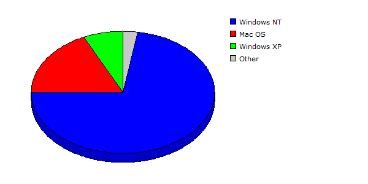

| Rank |
Operating System |
Hits |
Visitors |
| 1 |
Windows NT |
162937 |
79.04% |
4962 |
72.27% |
| 2 |
Mac OS |
21289 |
10.33% |
1234 |
17.97% |
| 3 |
Windows XP |
18314 |
08.88% |
489 |
07.12% |
| 4 |
Linux |
786 |
00.38% |
54 |
00.79% |
| 5 |
iPhone OS |
719 |
00.35% |
47 |
00.68% |
| 6 |
Windows Vista or Windows Server 2008 |
1171 |
00.57% |
38 |
00.55% |
| 7 |
Windows Server 2003 |
861 |
00.42% |
32 |
00.47% |
| 8 |
Windows |
9 |
00.00% |
3 |
00.04% |
| 9 |
Windows 98 |
3 |
00.00% |
3 |
00.04% |
| 10 |
FreeBSD |
53 |
00.03% |
2 |
00.03% |
| 11 |
Windows 2000 |
2 |
00.00% |
2 |
00.03% |
| |
Total |
206144 |
6866 |
|
Description: This report contains statistics about the operating systems that your visitors use.
|
|